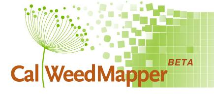
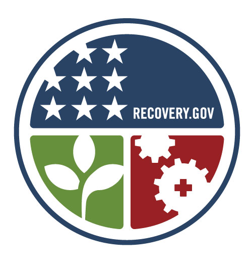
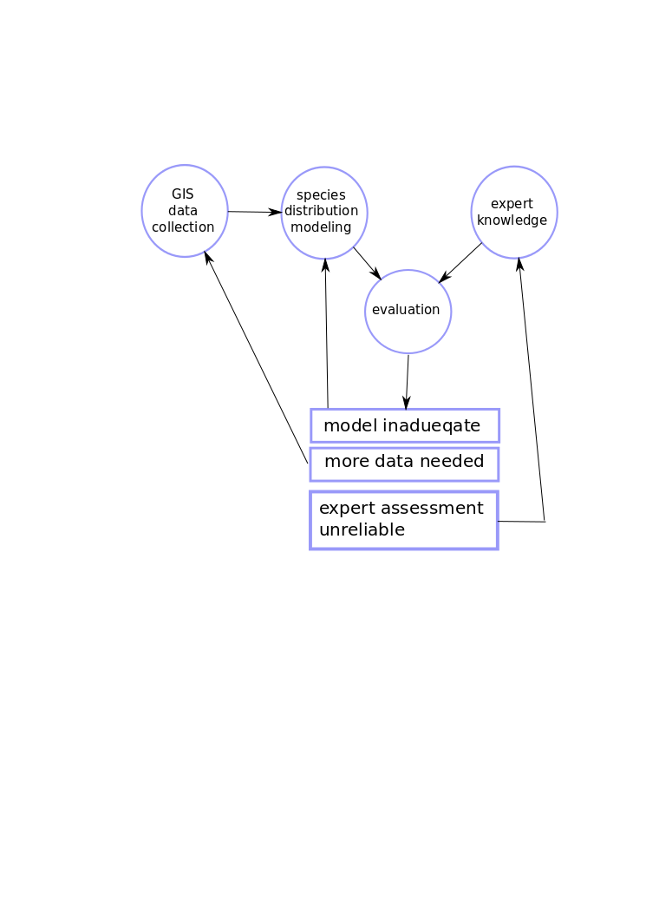
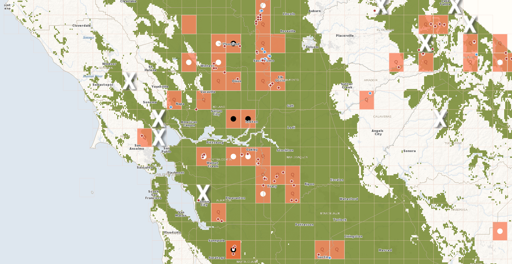
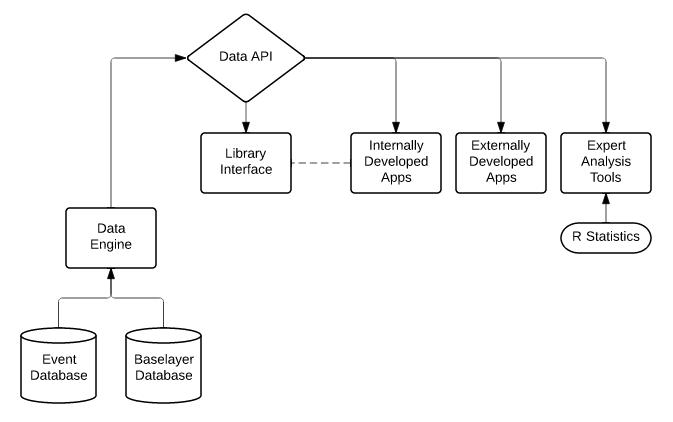

Geospatial Data Science
Visions for the GIF
Falk Schuetzenmeister, PhD
schuetzenmeister@berkeley.eduOverview
- My Background
- Geospatial Data Science
- Example 1: Statewide collection of ecological data
- Example 2: Data sharing and distribution through an RESTful API
- Continuing the Great Work of the GIF
My Background
- PhD in Sociology from the Dresden University of Technology
- Science Studies Dissertation: Interdisciplinarity and Research Organization in Atmospheric Chemistry
- Findings:
- Modern research is highly organized
- New roles such as programmers, administrators, technicians are becoming increasingly important
- Universities need to adapt and create structures that can balance organization and traditional faculty roles
What role should a facility like the GIF and its employees play within the university?
- Research support
- Infrastructure
- Teaching
- Public outreach
- Community building
- Innovation
Boundary Work: connecting different spheres, e.g. providing GIS or programming expertise to scientists, communicate scientific findings to the public or policy makers (Caladapt)
Problems:
- Limited financial resources at the university compared to the high tech industry. What would be incentives for very good developers to join the GIF?
- Non-academic career paths are not well established at the university.
- Those issues are also discussed at the Berkeley Institute of Data Science (BIDS)—ethnography program
- GIF as an experiment in data science as a new profession at the university?
Data Science
A preliminary definition: Reproducible methods to extract knowledge from data: scientific, technological, and social dimensions
- Data operationalization and collection
- Data storage and archiving
- Data sharing, distribution, and delivery
- Data processing: algorithms, software, and computing
- Communication and outreach
Geospatial Data
Data that can be related and analyzed on the basis of space (and time) as organizing principles.
Relevancy for ecological research
- Ecological data is sampled data, space and time allow for the reconstruction of context.
- Species distribution modeling as case in point
Ecological data science
A network of observations, people, and computers
CalWeedMapper
A collaborative data collection project

2010 - 2012 at the California Invasive Plant Council
calweedmapper.cal-ipc.orgThe task:
Collect as much data as possible about the spread of 200 invasive plants throughout California

Funded through the American Recovery and Reinvestment Act
Data Sources
- More than 200 GIS data sets from state, federal, and county agencies
- Herbarium data
- Citizen science data from Calflora
- Expert knowledge from about 400 land managers and botanists
- Species distribution modeling
- Reliable absent data needed
Data Collection as an iterative process
Example: Acroptilon repens
 calweedmapper.cal-ipc.orgBerkeley Ecoinformatics Engine
Sharing data through a RESTful API

funded by the W.M. Keck foundation
RESTful API
Application Programming Interface: A well defined and documented interface for applications to interact with each other.
RESTful APIs utilizing the http protocol. Users can usually communicate through well defined URL patterns (or by posting data to the API).
Example:
Advantages
- Returns are machine-readable.
- Data can be used in many contexts: web applications, software packages, desktop GIS
- It is a open data sharing format that can be accessed in most coding languages
- Web applications can be light-weight and focused on single purposes
Event data
- 5 million museum specimen (about 10 to 20 million by the end of the project)
- 60,000 photos reflecting ecological change in California
- soil sample data of about 20,000 locations
- sensor data from UC's field station system
- historic vegetation survey data
Continuous surface data (several TBs, mostly geospatial rasters)
Project structure

The application model
Rebuilding the VTM web site
Continuing the great work at the Geospatial Innovation Facility
A brief "history" of GIF
- started as a remote sensing imaging facility
- pioneering GIS on campus under Maggi Kelly's leadership
- leading in development of geospatial web applications: Cal-adapt, landcarbon
- We have a big chance to join the data science efforts on campus and presenting the spatial aspect.
Strategy
- Developing assets that can be reused and applied to new applications
- Data APIs: Ecoengine, Cal-adapt, raster API
- Code: django-spillway, greenwich, and django-etl-sync
- Build partnerships: MVZ, BIGCB, BIDS, ANR—pool resources
- Try to be more involved in the science of projects, closer collaboration with researchers
- Apply/develop collaborative software engineering approaches
What about GIS?
- ArcGIS and ArcGIS server are still leaders in the industry
- Tool box approach to GIS
- Embracing scripting and coding
- ArcPy
- R and Python
- Google Earth Engine
- Supporting the Geospatial Open Source Community
Fund raising and Networking
- Most funds are coming from agencies like CEC, USGS, NASA
- Partner on research grants (e.g. Ecoengine): data science support, open data requirements
- Raise funds for presence at national conferences
- Data Science Fellows